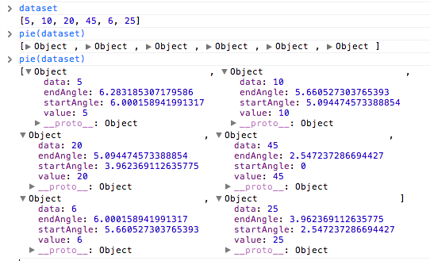

d3js: chapter 12. geomapping
이 글은 http://infovis.kr 스터디 하면서 작성했고 d3.js 12장의 내용이다.
GeoJSON
{
"type":"FeatureCollection",
"features":[{
"type":"Feature", // 주 단위 데이터 타입
"id":"01",
"properties":{"name":"Alabama"},
"geometry":{
"type":"Polygon",
"coordinates":[[[-87.359296,35.00118],
[-85.606675,34.984749], [-85.431413,34.124869],
[-85.184951,32.859696], [-85.069935,32.580372],
[-84.960397,32.421541], [-85.004212,32.322956],
[-84.889196,32.262709], [-85.058981,32.13674],
...
]]
}
}, {
"type":"Feature",
"id":"02",
"properties":{"name":"Alaska"},
"geometry":{
"type":"MultiPolygon",
"coordinates":[
[[[-131.602021,55.117982], [-131.569159,55.28229],
[-131.355558,55.183705], [-131.38842,55.01392],
[-131.645836,55.035827], [-131.602021,55.117982]]],
[[[-131.832052,55.42469],[-131.645836,55.304197],
[-131.749898,55.128935],[-131.832052,55.189182],
[-131.832052,55.42469]]]
...
]
}
},
...
}
- Feature가 주 단위 데이터.
- 좌표는
위도, 경도가 익숙하지만“[경도(latitude), 위도(longitude)]”로 표현:[-131.832052,55.189182]- 경도: 세로, 131.832052
- 위도: 가로, 55.189182
- 좌표 찾기 from Michal Migurski: http://teczno.com/squares
이 데이터를 d3로 그려보자:
//Width and height
const w = 500;
const h = 300;
//Define default path generator
var path = d3.geo.path();
//Create SVG element
var svg = d3.select('#phr-path')
.append('svg')
.attr('width', w)
.attr('height', h);
//Load in GeoJSON data
d3.json('us-states.json', (json)=> {
//Bind data and create one path per GeoJSON feature
svg.selectAll('path')
.data(json.features)
.enter()
.append('path')
.attr('d', path);
});
Path
잠깐 svg path와 d3에서 path 사용하는 방법을 익혀보자. 이 내용은 11장의 pie layout을 설명하는 내용이다.
path는 아래처럼 생김:
<path fill="#d62728" d="M9,184850993605149e-15,-150A150,150 0 0,
18399621792063931,124.27644738657631L0,0Z"></path>
pie layout:
var dataset = [5, 10, 20, 45, 5, 25];
// pie layout
var pie = d3.layout.pie();

pie chart 그리기:
//Width and height
const w = 300;
const h = 300;
const dataset = [ 5, 10, 20, 45, 6, 25 ];
var outerRadius = w / 2;
var innerRadius = 0;
var arc = d3.svg.arc()
.innerRadius(innerRadius)
.outerRadius(outerRadius);
var pie = d3.layout.pie();
//Easy colors accessible via a 10-step ordinal scale
//Synthia Brewer
var color = d3.scale.category10();
//Create SVG element
var svg = d3.select("#phr-pie-chart")
.append("svg")
.attr("width", w)
.attr("height", h);
//Set up groups
var arcs = svg.selectAll("g.arc")
.data(pie(dataset))
.enter()
.append("g")
.attr("class", "arc")
.attr("transform", `translate(${outerRadius},${outerRadius})`);
//Draw arc paths
arcs.append("path")
.attr("fill", (d, i)=> color(i))
.attr("d", arc);
//Labels
arcs.append("text")
.attr("transform", (d)=> `translate(${arc.centroid(d)})`) //도형의 중심점에 위치시킨다
.attr("text-anchor", "middle")
.text((d)=> d.value);
- “Synthia Brewer”: 어떤 색 패턴이 사람에게 잘 인식되는지 실험을 통해 찾은 패턴
12.3 투영법
3차원 데이터를 2차원에 투영하는 방법 - p268
- Jason Davies: http://www.jasondavies.com/
- D3가 제공하는 Projections: https://github.com/mbostock/d3/wiki/Geo-Projections
- D3 Projection 비교 해보기: http://bl.ocks.org/mbostock/3711652
- D3로 그린 한국 지도: http://codefactory.kr/2013/05/17/korea-map/
//Width and height
const w = 500;
const h = 300;
//Define map projection
var projection = d3.geo.albersUsa()
//.translate([w/3, h/2]); // 위치
.translate([w/2, h/2])
.scale([500]); //default 1000
//Define path generator
var path = d3.geo.path()
.projection(projection);
//Create SVG element
var svg = d3.select("#phr-projection")
.append("svg")
.attr("width", w)
.attr("height", h);
//Load in GeoJSON data
d3.json("us-states.json", (json)=> {
//Bind data and create one path per GeoJSON feature
svg.selectAll("path")
.data(json.features)
.enter()
.append("path")
//.attr("d", path);
.attr("d", path)
.style("fill", "steelblue");
});
12.4 단계 구분도(Choropleth)
- 적색주와 청색주: http://ko.wikipedia.org/wiki/%EC%A0%81%EC%83%89%EC%A3%BC%EC%99%80_%EC%B2%AD%EC%83%89%EC%A3%BC
- 영어: http://en.wikipedia.org/wiki/Red_states_and_blue_states
- 단점: 인구 밀도는 낮고 큰 지역 처럼 여러 정보는 표현하기 어렵다.
데이터 us-ag-productivity-2004.cvs:
state,value
Alabama,1.1791
Arkansas,1.3705
Arizona,1.3847
California,1.7979
Colorado,1.0325
state,value는 프로퍼티 이름이 된다:
이 데이터는 미국 농무부(USDA)가 제고앟는 데이터로, 2004년 한 해 동안 믹국 각 주별 농작물 생산 능력을 1996년 앨라바바(Alabama) 주 생산량을 1.0으로 삼아 서 표현한 데이터다. 그러므로 클수록 생산성이 좋은 주가 된다.(미 정부 공개 데이터는 http://data.gov를 통해 제공된다. - p271
[
{
state: "Alabama",
value: "1.1791"
},
...
]
Choropleth 그리기:
//Width and height
const w = 500;
const h = 300;
//Define map projection
var projection = d3.geo.albersUsa()
.translate([w/2, h/2])
.scale([500]);
//Define path generator
var path = d3.geo.path()
.projection(projection);
//Define quantize scale to sort data values into buckets of color
var color = d3.scale.quantize()
.range(["rgb(237,248,233)",
"rgb(186,228,179)",
"rgb(116,196,118)",
"rgb(49,163,84)",
"rgb(0,109,44)"]);
//Colors taken from colorbrewer.js, included in the D3 download
//domain은 선형이지만 치역이 5개로 매핑됨.
//domain은 데이터에서 min, max로 추출한다.
//Create SVG element
var svg = d3.select("#phr-choropleth")
.append("svg")
.attr("width", w)
.attr("height", h);
//Load in agriculture data
d3.csv("us-ag-productivity-2004.csv", (data)=> {
//Set input domain for color scale
color.domain([
d3.min(data, (d)=> d.value),
d3.max(data, (d)=> d.value)
]);
//Load in GeoJSON data
d3.json("us-states.json", (json)=> {
//Merge the ag. data and GeoJSON
//Loop through once for each ag. data value
for(var x of data) {
//Find the corresponding state inside the GeoJSON
var f = json.features.find((f)=> x.state == f.properties.name)
if(f){
f.properties.value = parseFloat(x.value);
}
}
//Bind data and create one path per GeoJSON feature
svg.selectAll("path")
.data(json.features)
.enter()
.append("path")
.attr("d", path)
.style("fill", (d)=> {
//Get data value
var value = d.properties.value;
return value? color(value): "#ccc";
});
});
});
12.5 포인트 지점 추가하기.
us-cities.csv:
rank,place,population,lat,lon
1,New York city,8175133,40.71455,-74.007124
2,Los Angeles city,3792621,34.05349,-118.245323
3,Chicago city,2695598,45.37399,-92.888759
4,Houston city,2099451,41.337462,-75.733627
- 데이터 만들기(저자의 Favorite): http://www.gpsvisualizer.com/geocoder/
- 데이터 수동 확인: http://teczno.com/squares
//Width and height
var w = 500;
var h = 300;
//Define map projection
var projection = d3.geo.albersUsa()
.translate([w/2, h/2])
.scale([500]);
//Define path generator
var path = d3.geo.path()
.projection(projection);
//Define quantize scale to sort data values into buckets of color
var color = d3.scale.quantize()
.range(["rgb(237,248,233)",
"rgb(186,228,179)",
"rgb(116,196,118)",
"rgb(49,163,84)",
"rgb(0,109,44)"]);
//Colors taken from colorbrewer.js, included in the D3 download
//Create SVG element
var svg = d3.select("#phr-point")
.append("svg")
.attr("width", w)
.attr("height", h);
//Load in agriculture data
d3.csv("us-ag-productivity-2004.csv", function(data) {
//Set input domain for color scale
color.domain([
d3.min(data, (d)=> d.value),
d3.max(data, (d)=> d.value)
]);
//Load in GeoJSON data
d3.json("us-states.json", (json)=> {
//Merge the ag. data and GeoJSON
//Loop through once for each ag. data value
for(var x of data) {
//Find the corresponding state inside the GeoJSON
var f = json.features.find((f)=> x.state == f.properties.name)
if(f){
f.properties.value = parseFloat(x.value);
}
}
//Bind data and create one path per GeoJSON feature
svg.selectAll("path")
.data(json.features)
.enter()
.append("path")
.attr("d", path)
.style("fill", (d)=> {
//Get data value
var value = d.properties.value;
return value? color(value): "#ccc";
});
});
//Load in cities data
d3.csv("us-cities.csv", function(data) {
svg.selectAll("circle")
.data(data)
.enter()
.append("circle")
// scale은 파라미터가 하나고 리턴값이 하나인 함수지만
// projection은 파라미터가 두 개고 리턴값이 두 개인 함수.
.attr("cx", (d)=> projection([d.lon, d.lat])[0])
.attr("cy", (d)=> projection([d.lon, d.lat])[1])
// Scale을 적용해봄직하다.
.attr("r", (d)=> Math.sqrt(parseInt(d.population) * 0.00004))
//.attr("r", 5)
.style("fill", "yellow")
.style("opacity", 0.75);
});
});
12.6 지오데이터 취득과 분석.
1. shape 파일 찾기
- 포멧은 지리 정보 시스템(GIS) 소프트웨어를 사용되는 포멧 - p279
- 적당한 GeoJSON 데이터를 찾을 수 없으면 Shape 파일 찾자.
- Natural Earth(http://www.naturalearthdata.com): 방대한 지리정보의 보고, 오픈
- The United States Census: http://www.census.gov/geo/www/cob/cbf_state.html
2. 축척을 선택
자료마다 축척이 다를 수도 있지만, 미국 인구조사 세이프 파은 대부분 다음 세가지 중 하나:
- 1:500,000(1:500k)
- 1:5,000,000(1:5m)
- 1:20,000,000(1:20m)
소축척, 대축척, 고추척:
- 소축척: 1:500k -> 1: 5m -> 1: 20m
- 대축척, 고추척: 1:500k <- 1: 5m <- 1:20m
Natural Earth에서 가장 축척이 작은 오대양 지도(1:110m):
http://www.naturalearthdata.com/downloads/110m-physical-vectors/110m-ocean/
3. 세이프를 단순화
- 마이크 보스탁의 라인을 단순화하는 데모: http://bost.ocks.org/mike/simplify/
- D3.simplify 플러그인 사용
- Matt Bloch의 MapShaper: http://mapshaper.org
- 지도를 단순화 해서 Shapefile, GeoJSON, TopoJSON로 변환할 수 있다.
- 사용번 p282에 설명함
- JavaScript 라이브러리
- Mike Migurski의 Bloch: https://github.com/migurski/Bloch
- D3.simplify 플러그인: TopoJSON으로 대체됨.
- 기하학적 단순화 프로젝트 TopoJSON(https://github.com/mbostock/topojson)
- GeoJSON 보다 신상이며 효율적
- http://bl.ocks.org/4090870
4. GeoJSON으로 변환
Shapefile을 GeoJSON으로 변환하는 ogr2ogr 명령어 사용법이 책에 잘 설명돼 있음.
마지막으로 투영법(Projection)을 변경해보는 예제:
//Width and height
const w = 700;
const h = 500;
//Define map projection
//var projection = d3.geo.albersUsa()
var projection = d3.geo.mercator()
.translate([w/2, h/2])
.scale([100]);
//Define path generator
var path = d3.geo.path()
.projection(projection);
//Create SVG element
var svg = d3.select("#phr-mercator")
.append("svg")
.attr("width", w)
.attr("height", h);
//Load in GeoJSON data
d3.json("oceans.json", function(json) {
//Bind data and create one path per GeoJSON feature
svg.selectAll("path")
.data(json.features)
.enter()
.append("path")
.attr("d", path)
.style("fill", "steelblue");
});